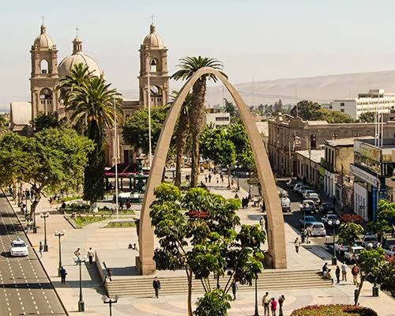

Paseo Cívico
Conoce monumentos y espacios representativos de la ciudad.

Historia, paseos urbanos y sabores sureños en una ciudad llena de identidad.
Planea tu próxima aventura y conoce algunos de los lugares y experiencias que hacen especial a Tacna. Organiza tu viaje con tiempo y disfruta cada momento.
Conoce monumentos y espacios representativos de la ciudad.
Recorre paisajes agrícolas y pueblos tradicionales cercanos.

Prepara tu recorrido y disfruta del camino con la experiencia de viaje de Oltursa.